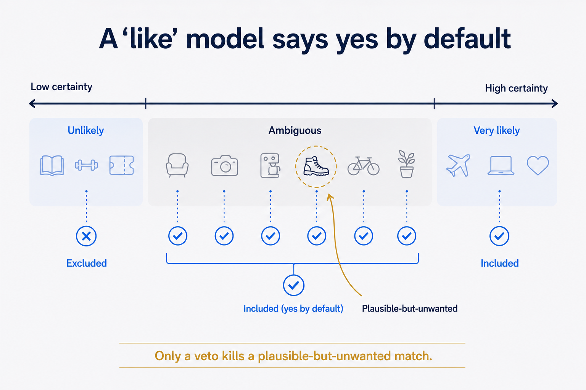
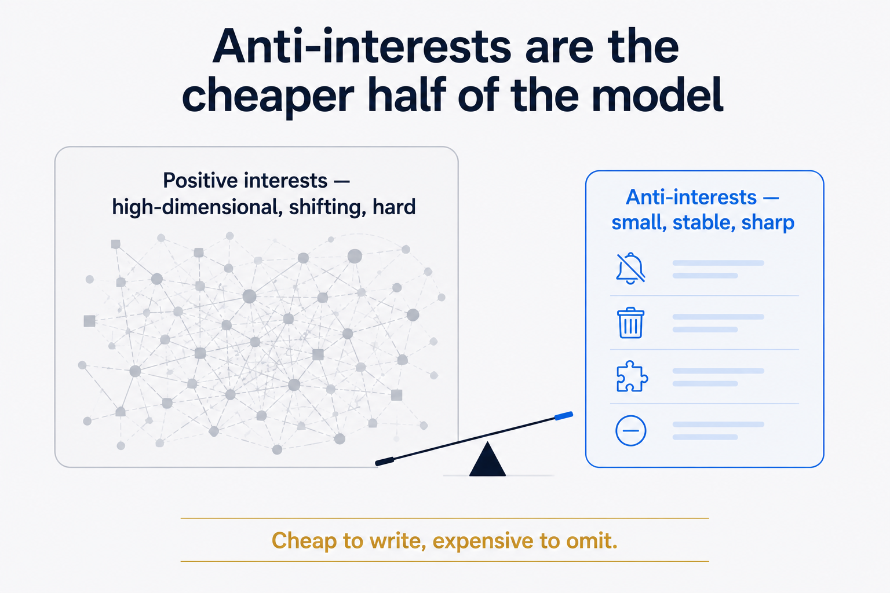
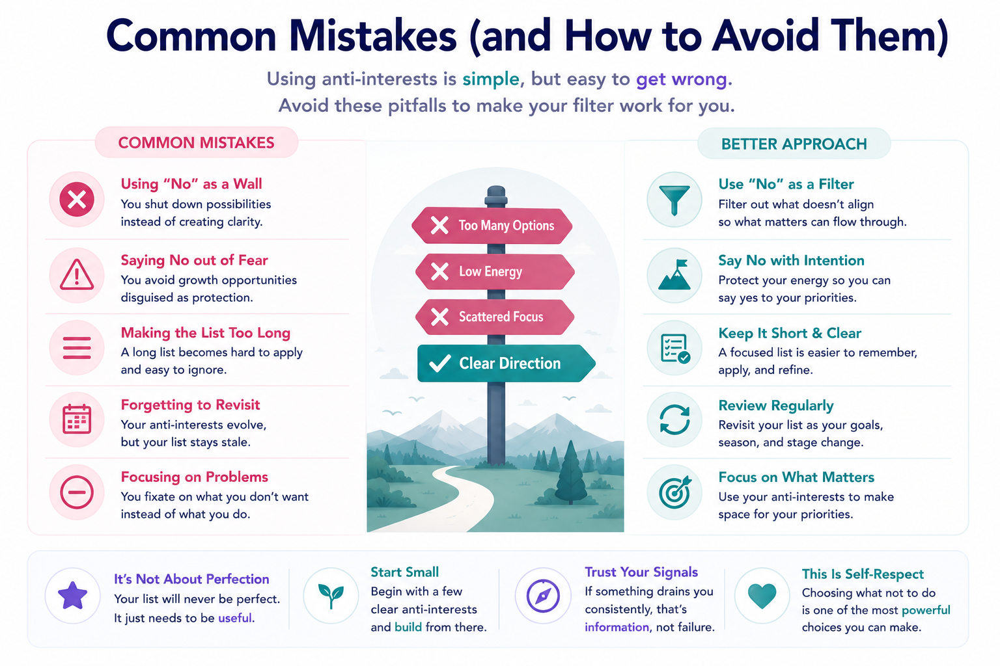

The recommendation that gives the game away
Every personalization system you use is built on a single verb: like. It watches what you click, infers what you're into, and serves you more of it. Spotify, your feed, your news app, the AI assistant drafting your morning brief — all of them optimize for one question: what does this person want?
None of them ask the opposite question: what would this person never want?
That sounds like the same question inverted. It isn't. And the gap between them is exactly where every feed turns to noise. The system that knows you love jazz will, sooner or later, recommend a jazz musical — because it matched on "jazz" and has no idea you'd rather walk into traffic than sit through a musical. It matched on a positive signal and had no negative signal to veto it. So the noise gets through, wearing the costume of relevance.
The missing piece has a name: anti-interests. An explicit, declared list of what you are not interested in. And once you've built one, you stop wondering why it took so long.
Why "like" can't carry the whole load
Here's the structural problem. A positive-interest model is open-ended by design. It's supposed to grow — you discover new things, your tastes expand, and the system should follow. That's a feature. But it means the positive model is permanently incomplete and permanently generous: when in doubt, it includes. "You liked X, and this is X-adjacent, so here you go."
That generosity is precisely the failure mode. Most of what gets recommended to you isn't wrong because the system doesn't know your interests — it's wrong because the system fills gaps with plausible-but-unwanted matches. The category technically fits. The tag overlaps. The embedding is close. And it's still something you'd never, ever choose.
You cannot fix this by tuning the positive model harder. A better "like" predictor still says yes-by-default in the ambiguous zone. The only thing that reliably kills a plausible-but-unwanted recommendation is a rule that says: this category — no. Always. Regardless of how well it matched.
That's an anti-interest. It's not a low score. It's a veto.

A worked example, from a system I actually run
I maintain a personal knowledge system that enriches my daily notes — weather, news, "on this day," interest-matched picks. The selection is driven by a config of scored interests: city trips 0.95, data engineering high, botanical gardens 0.9, 80s Italo disco, arthouse film. Standard positive model.
The first time the news enrichment ran, it dutifully surfaced a football transfer and a Formula 1 crash. Both scored fine on a naive relevance pass — they're "major news," they're "local," they're "trending." And both are things I have zero interest in and never will. The positive model had no way to know that. It only knew like, and these weren't disliked enough on any axis to fall below threshold. They were simply off-limits — a distinction the system couldn't represent.
So I added the half that was missing. A small file, anti-interests.yaml:
anti_interests:
- category: musicals
reason: "Not the style — too song-driven a format"
scope: always
- category: professional-sport-events
reason: "No interest in arena/stadium events"
scope: alwaysThree fields do the whole job: a category, a reason (so future-me remembers why), and a scope (always, or conditional — "travel-only", "work-context"). The scope matters more than it looks: some things are anti-interests in one context and not another. I don't want sport in my news digest, but I'm not blanket-banning the word everywhere.
Now the rule is explicit. Any candidate — news item, recommended article, generated suggestion — gets matched against interests for a score, and then vetoed if it hits an in-scope anti-interest, regardless of how well it scored. The football transfer never reaches me. Not because it scored low. Because it was ruled out.
Anti-interests are the cheaper half of the model
The reason this works so well is an asymmetry most people miss.
Your positive interests are high-dimensional, fuzzy, and always shifting. Capturing them fully is genuinely hard — that's why recommendation engines are entire research fields. But your anti-interests are small, stable, and sharp. You can probably write the most important ten in five minutes, and they'll still be true in five years. Musicals, certain sports, MLM pitches, celebrity gossip, crypto-hype — the list of things you've firmly ruled out is short and barely moves.
So you get a wildly favorable trade: a tiny, low-maintenance file kills a large fraction of your noise. You are not trying to model all of human interest. You're drawing a few bright lines around the stuff that should never get through. Cheap to write, expensive to omit.

And there's a second-order benefit: the reason field turns the filter into a record of self-knowledge. Six months later you can read why you ruled something out — and notice when a reason has gone stale. (Mine had "cruises" pencilled in as an anti-interest; then I genuinely got curious about a specific kind of cruise. The explicit list made the contradiction visible, so I could nuance it instead of silently fighting my own filter. A buried preference can't do that.)
This is the "NOT" clause every personal system is missing
If you think in queries, the point lands immediately. Personalization has spent two decades perfecting the WHERE interest MATCHES … clause and almost completely ignored the AND category NOT IN (anti_interests) clause. Both are part of the same statement. A query with only the positive half returns everything plausible and drowns you. The negative half is what makes the result yours.

It generalizes past your own feed. Any system that filters or generates for a person — a RAG pipeline choosing what context to load, an agent deciding what to surface, a recommender ranking options — improves the moment you give it an explicit negative filter to apply after relevance scoring. Structure the taste as two halves: what to match toward and what to veto. The veto is declarative, auditable, and human-owned. It's a rule, not a guess.
That's the deeper pattern. We try to make systems smarter by improving their guesses. Often the bigger win is letting a human state a few firm rules the guessing must obey. Relevance is a model's job. Knowing what you'd never want is yours — so write it down and make the system honor it.
Start your list today
You don't need a pipeline to get the benefit. Open a file. Write the heading anti-interests. List the ten categories of thing you are reliably, permanently not interested in — and next to each, one line on why. That file is now the most efficient noise filter you own, and it'll pay off in every system you can feed it to.
Personalization will keep getting better at telling you what you like. It's on you to tell it what you don't.
Drawn from a real personal-knowledge system, where an anti-interests.yaml filter sits downstream of interest scoring across news curation, daily-note highlights, and reading pipelines.